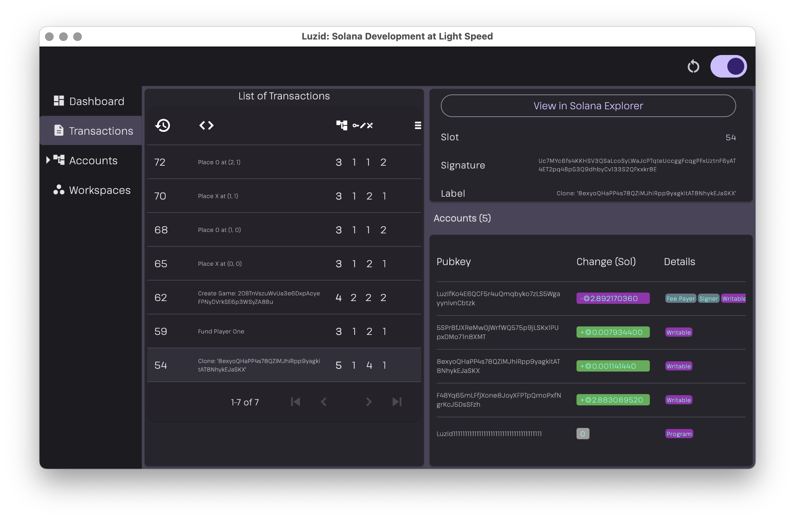

🎉 It's been a long time coming. The first Luzid Alpha is here!
Table of Contents

I expect you have been waiting patiently to get your hands on a copy of Luzid and I've been working hard behind the scenes to make it happen. I'm excited to announce that the first Luzid Alpha is now ready to be released to early adopters.
Features
You can learn about the list of features that Luzid currently provides by watching the videos in this playlist.
The Luzid: Solana Test Validator on Steroids video describes the following features:
- Luzid Dashboard showing the status of the Validator
- Viewing Transactions and inspecting Parsed Transaction Account Data
- Cloning Remote Accounts into Luzid
- Creating and Restoring Account Snapshots
- Stopping/Starting the Validator
In order to learn about the Luzid Hotswap feature I recommend watching Luzid: Hotswapping Programs after each Compile without Deploys or Validator Restart
The Luzid: controlling your Validator via the SDK from your tests or application explains how to control Luzid via TypeScript from a webpage or your tests.
Make sure to read through the SDK examples as well.
Versions and Release Pages
The following versions are available:
- Luzid Alpha for MacOS: release page
- Luzid Alpha for Linux: release page
I advise especially MacOS users to read the release notes carefully as the installation process will be much easier as a result. However to help you in case issues arise, I've also prepared a video tutorial for you that is linked in the release notes.
For Linux the installation process is much simpler especially if you're on the latest LTS version of your distro.
Windows can install the command line only version see Headless CLI and run it in WSL. However for now a GUI for windows is not available until the release coming in a few weeks see below.
Luzid UI
MacOS users can install the Luzid UI via the following file which will work on both Intel and ARM:
luzid.app.tar.gz
Linux users can install the Luzid UI via the following file:
luzid.tar.gz
The release notes for each version contain more installation instructions.
Headless CLI
The Luzid UI embeds the Luzid validator, however you may want to run the validator separately.
To that end a headless Luzid version is available for MacOS, Linux and Windows (using the Linux version via WSL). You can find it as part of the Assets of the respective releases.
On MacOS install either of the below:
lzd_aarch64-apple-darwin.tar.gz(ARM)lzd_x86_64-apple-darwin.tar.gz(Intel)
On Linux install:
lzd.tar.gz
Either will provide you a lzd command that you can run via VALIDATOR_START=1 ./lzd in order
to launch Luzid and start the validator as well.
Then you can control/query Luzid via the SDK as well as have it process transactions.
Refer to the SDK examples.
Getting Started Quickly
Once you startup the Luzid UI open the Transactions tab, click on the Anchor Tic Tac Toe link and play around with the app while keeping an eye on Luzid.
You can follow along the Luzid: controlling your Validator via the SDK from your tests or application video as well.
Once you have that working you should try to clone and then interact with other programs from Mainnet or Devnet and of course I recommend you to add a local Workspace and have it being watched by Luzid in order to benefit from the Hotswap feature.
Current Status and Future Plans
I realize that Luzid is still very rough around the edges and you might run into some issues as well as miss some features that are essential to you. Please don't hesitate to reach out to me and other early adopters on our Luzid Discord to either have your questions answered or engage in discussions about how to improve Luzid.
In the Developers section you can file issues and request new features.
At any rate check in and say hi! 👋
Plans Going Forward
The next big improvement for Luzid will be the replacement of the embedded validator which is currently a fork of the existing Solana validator.
The new validator will be tailored to local development, run much faster and utilize less CPU resources.
Additionally I'm planning to separate the UI and Validator pieces such that you can start Luzid from the command line and attach a UI to it on demand. This will make it easier to support Windows and allow us to provide the Luzid UI via a WebApp running in the browser.